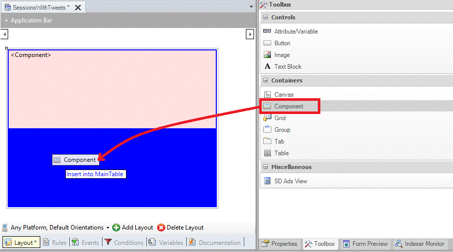
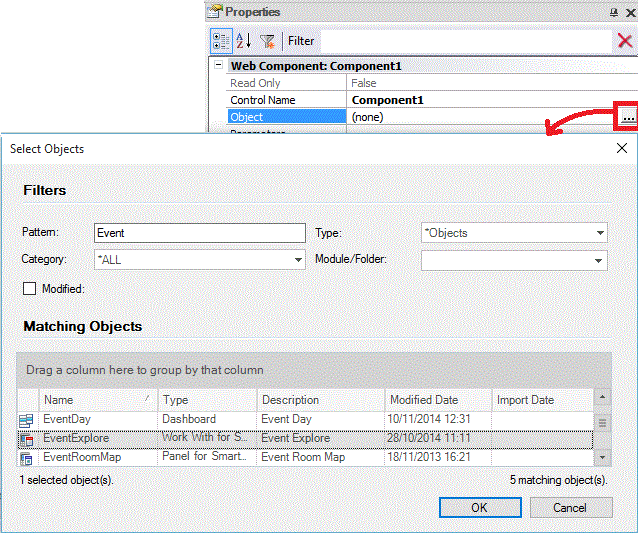
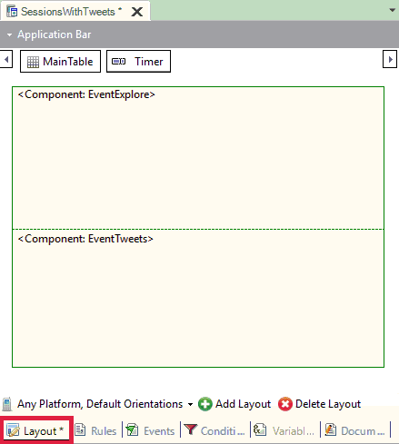
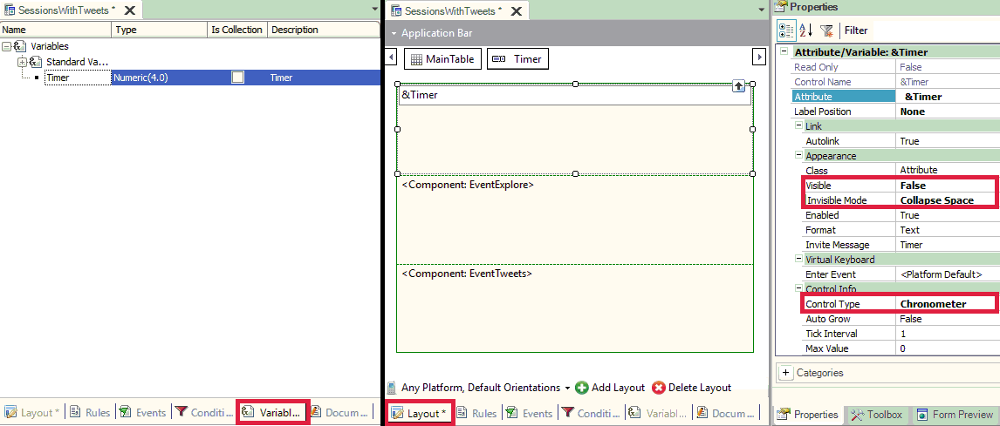

SD Components are available in the toolbox for SDPanel or WWSD . Like Web Components, SD Components are controls that can contain SDPanel or WWSD objects without losing any of its characteristics and they can also run independently. This feature provides to designers of GeneXus Smart Device applications a high degree of reusability. The main difference with Web Components is that SD components don't need any additional property like Type property (in Web Panels and Transactions).
Simple usage exampleIn EventDay, suppose we want to view tweets while we are reading session content. To do this, we create a Panel for Smart Devices called "SessionsWithTweets" and drag two Component controls from the toolbox.  Then, we must set both Component controls with WorkWith object for Sessions and the Panel for Smart Devices of Tweets as shown below:  Finally, the layout results as shown below. 
MethodsRefreshCauses an object embedded into an SD Component to execute the Refresh event. Return value: None Parameters: None Note: Differences between Refresh methods/commands and how to use them:
Event trigger sequence with multiple ComponentsThe event trigger order in a Panel for Smart Devices with multiple Components is analogous to Detail and Sections in Work With for Smart Devices. If we have C1...CN Components in a Panel P, schematically the execution order will be:
Client Start (P)
Start (P)
Refresh (P)
Load (P)
ClientStart (C1)
Start (C1)
Refresh (C1)
Load (C1)
<...>
ClientStart (CN)
Start (CN)
Refresh (CN)
Load (CN)
Action Bar behaviorWhen using multiple Components, the Action Bar behavior will be the combination of actions for each Component.
Advance usage exampleContinuing with the previous example, suppose we want to read the tweets minute. To do this, we must write an event associated with a Timer variable (invisible in SD Panel and with Chronometer control set) and refresh the screen when the elapsed time exceeds 60 seconds. 
Event ClientStart
// Init timer
&Timer = 0
Endevent
Event &Timer.Tick
// If one minute elapsed, refresh component
If Mod(&Timer,60) = 0
Component2.Refresh()
EndIf
EndEvent
Finally, substitute the invocation to Sessions on the dashboard, delete the Tweets node and run the application.
|
| Backlinks | |
| Dynamic Component Creation | HowTo: Using Global Events in Smart Device applications |
| Object property |